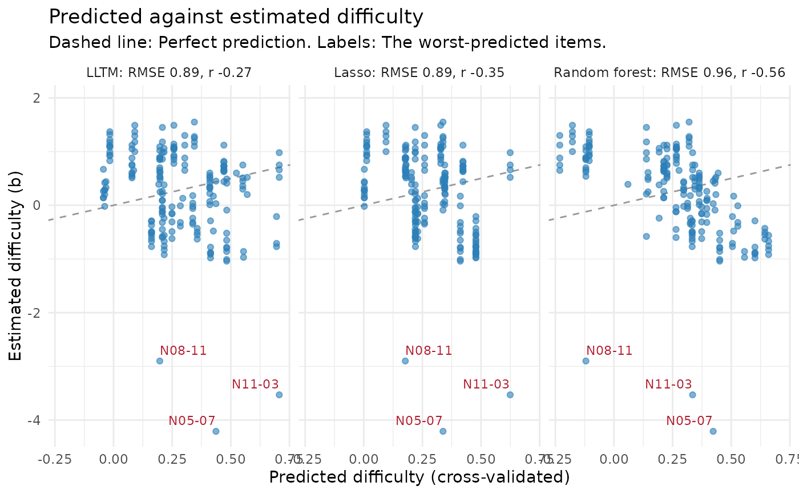

Predicts the difficulty of items from their features (for example the
text features of item_features()) with up to three models, and compares
them by how well they predict items they were not fitted on:
Usage
predict_difficulty(
data,
features,
b = "b",
se = NULL,
methods = c("lltm", "lasso", "forest"),
folds = 5,
group = NULL,
id = "id",
ntree = 100,
seed = 1
)
# S3 method for class 'mv_difficulty'
tidy(x, ...)
# S3 method for class 'mv_difficulty'
autoplot(object, label = 3, ...)
# S3 method for class 'mv_difficulty'
predict(object, newdata, method = NULL, ...)Arguments
- data
a data frame with one row per item, holding the difficulties and the features (for example
merge(items, item_features(items))).- features
names of the feature columns. Character and factor columns are turned into indicator variables.
- b
name of the column with the item difficulties.
- se
optional name of a column with the standard errors of
b; used to weight the LLTM and to show the estimation error inb.- methods
any of
"lltm","lasso"and"forest".- folds
number of cross-validation folds.
- group
optional name of a column whose values are held out together.
- id
name of the item id column; when absent, items are numbered.
- ntree
number of trees in the random forest.
- seed
random seed for the folds and the forest, or
NULL.- x, object
a result of
predict_difficulty().- ...
not used.
- label
number of the worst-predicted items to label in each panel.
- newdata
a data frame of new items with the same feature columns.
- method
which fitted model to use; the first one by default.
Value
An object of class mv_difficulty: A list with accuracy (a
tibble with method, rmse, mae, r and r2, all from
cross-validation), cv (the out-of-fold predictions: id, b,
method, predicted, fold), models (each method fitted to all
items), leaky (the rank correlations with b of features at 0.8 or
more), and the
settings. Use tidy() for the coefficients and importances,
autoplot() to plot the predictions and predict() for new items.
tidy() returns a tibble with method, term, estimate and
std_error: The coefficients of the LLTM (with standard errors) and the
lasso, in logits per unit of the feature, and for the forest each
feature's share of the total improvement in fit (std_error is NA).
Details
"lltm": A linear model of difficulty on the features, the two-step form of the linear logistic test model (Fischer, 1973) and of explanatory IRT. Its coefficients say how much each feature adds to difficulty, in logits. Withse, items are weighted by the precision of their estimated difficulty."lasso": A linear model whose coefficients are shrunk towards zero, with some set to exactly zero; the penalty is chosen by cross-validation within the training items."forest": A random forest of regression trees, which can pick up interactions and non-linear effects but has no coefficients to read.
All three are fitted in base R. Each model is judged by folds-fold
cross-validation: The items are split into folds, and each fold's
difficulties are predicted from a model fitted to the other folds. With
group (such as the item family), whole groups are held out together,
which shows how well difficulty can be predicted for a new family rather
than for a new item from a family already seen. A factor feature whose
level was not seen in training is predicted as the average of the levels
that were.
As a guard against leakage, numeric features whose rank correlation with difficulty is 0.8 or more on their own are listed when the result is printed: A feature that predicts difficulty that well is often computed from the same responses as the difficulty itself, and so is not available before field testing.
References
Fischer, G. H. (1973). The linear logistic test model as an instrument in educational research. Acta Psychologica, 37(6), 359-374.
See also
item_features(); for the one-step LLTM fitted to responses,
the itemdesign and item.formula arguments of mirt::mirt(), or the
eirm package for explanatory IRT models with random item effects.
Examples
d <- merge(itemtext, item_features(itemtext))
m <- predict_difficulty(d, c("words", "sentences", "max_digits", "decimals"),
se = "b_se", methods = c("lltm", "lasso"))
m
#> <mv_difficulty> 192 items, 4 features, 5-fold cross-validation (random folds)
#> method RMSE MAE r R2
#> LLTM 0.80 0.59 0.22 0.05
#> Lasso 0.81 0.59 0.19 0.03
#> Estimation error in b (RMSE of b_se): 0.10. No model can predict b more closely than that.
#> Use tidy() for the coefficients, autoplot() for the predictions.
tidy(m)
#> # A tibble: 10 × 4
#> method term estimate std_error
#> <chr> <chr> <dbl> <dbl>
#> 1 lltm (Intercept) 0.193 0.175
#> 2 lltm words 0.0922 0.0211
#> 3 lltm sentences -0.746 0.174
#> 4 lltm max_digits 0.0401 0.0585
#> 5 lltm decimals 0.373 0.106
#> 6 lasso (Intercept) 0.397 NA
#> 7 lasso words 0.0905 NA
#> 8 lasso sentences -0.760 NA
#> 9 lasso max_digits -0.0194 NA
#> 10 lasso decimals 0.300 NA
# \donttest{
# with the item family, holding out whole families
m2 <- predict_difficulty(d, c("family", "sentences", "max_digits", "decimals"),
group = "family")
m2
#> <mv_difficulty> 192 items, 4 features, 5-fold cross-validation (folds by family)
#> method RMSE MAE r R2
#> LLTM 0.89 0.67 -0.27 -0.17
#> Lasso 0.89 0.67 -0.35 -0.16
#> Random forest 0.96 0.76 -0.56 -0.37
#> Use tidy() for the coefficients, autoplot() for the predictions.
autoplot(m2)

# }